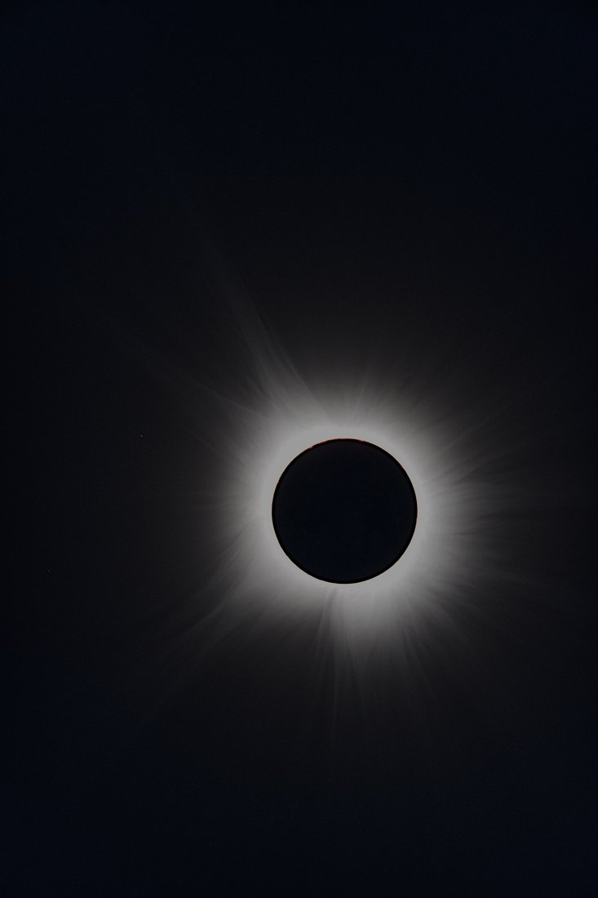
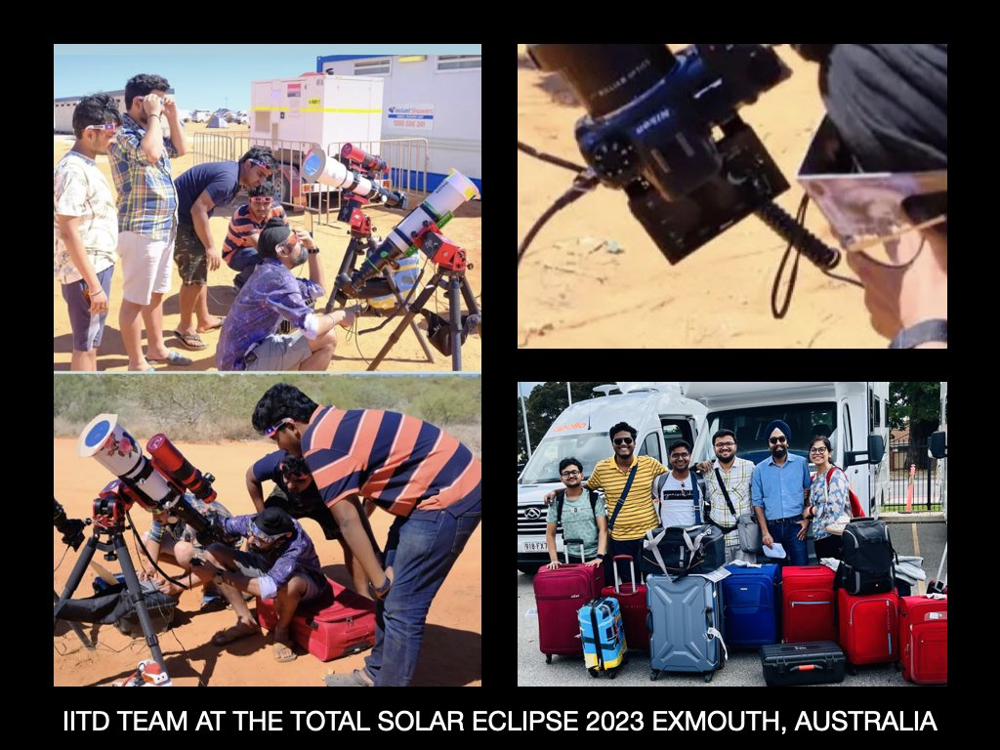
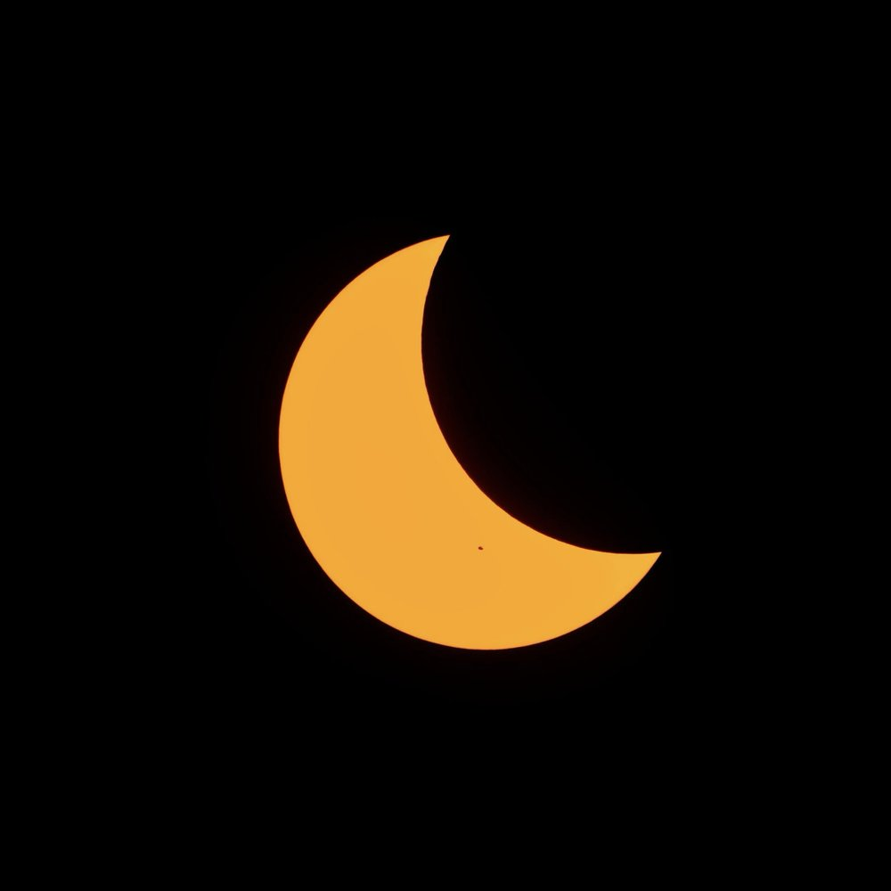
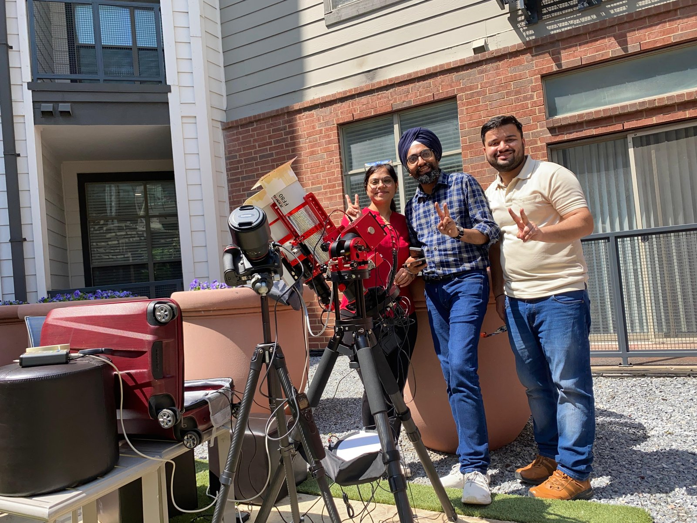
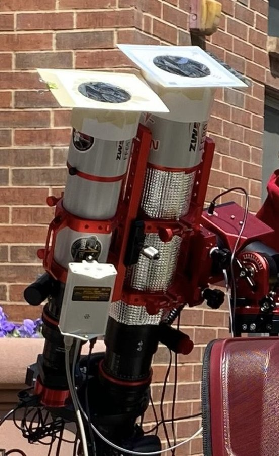
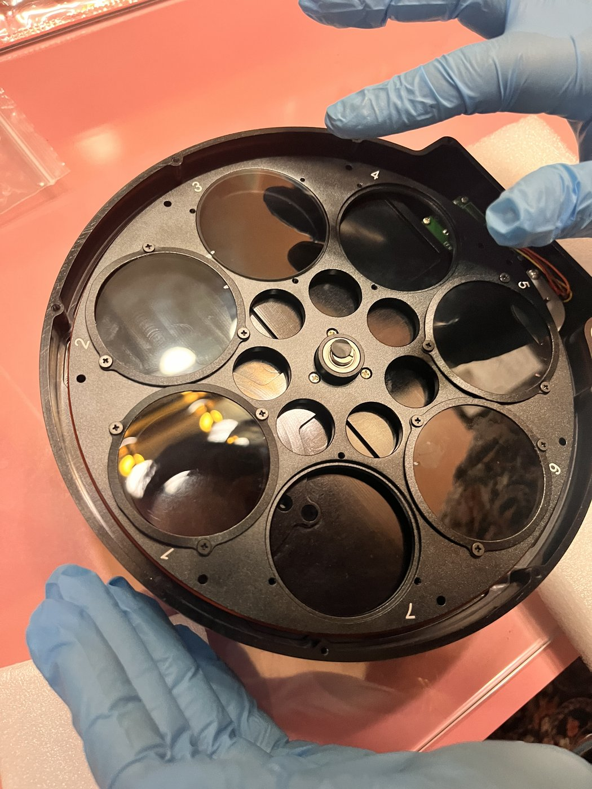
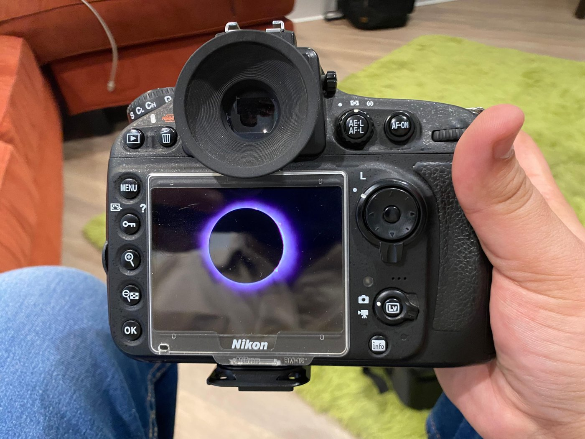
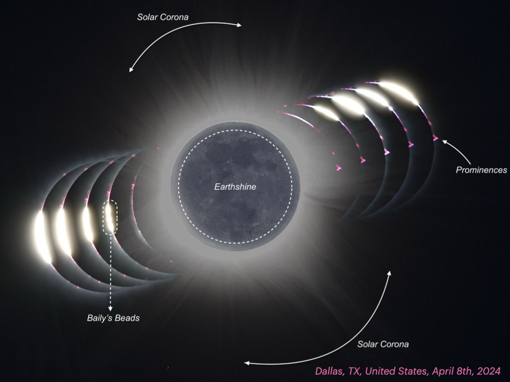
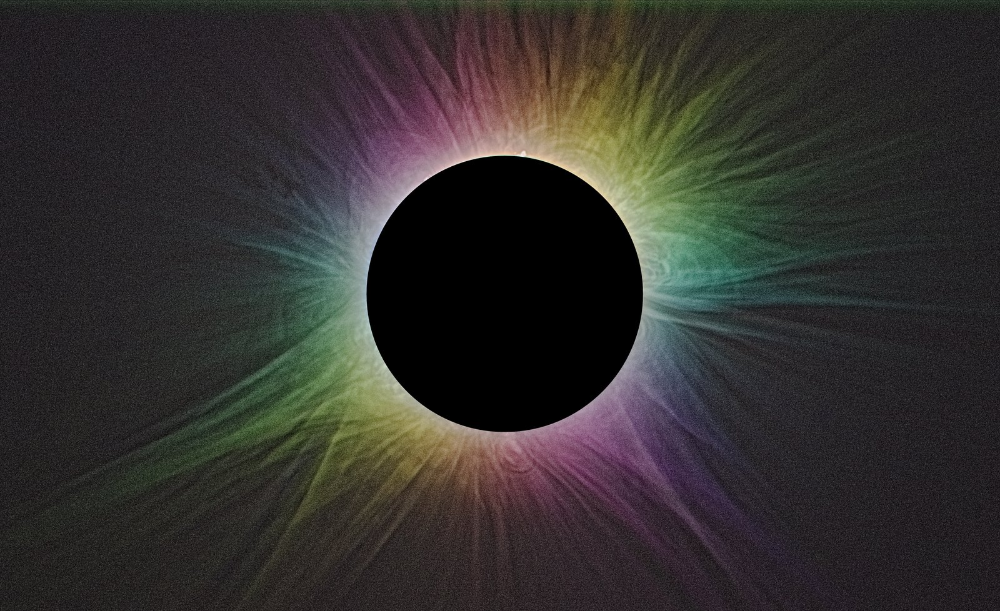
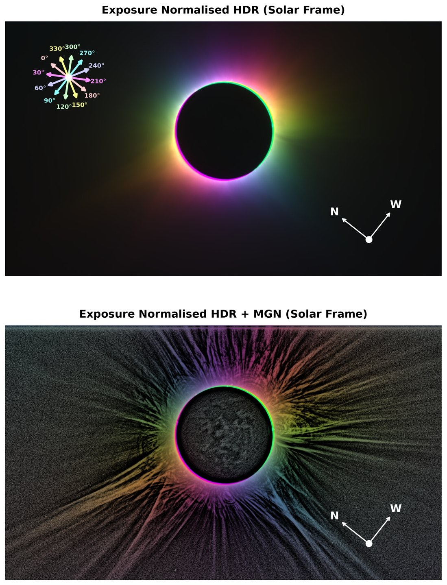

Polarimetry of the solar corona
Two eclipses, a year apart. With Prof. Suprit Singh's group at IIT Delhi we set out to measure how the light of the solar corona is polarized, in three colours at once: first a rehearsal in Exmouth, Australia, in 2023, then the main experiment in Dallas, Texas, during the total solar eclipse of 8 April 2024.
1Why the corona
Light that maps the corona
The corona, the Sun's outer atmosphere, is far fainter than the solar disk, so from the ground it shows itself only in the minutes when the Moon covers the Sun. Much of its white light is sunlight scattered by free electrons, and that scattering leaves it linearly polarized. How much of it is polarized, and in which direction, traces the density and structure of the coronal plasma, and with them the magnetic field that shapes it.
Measuring it takes images through polarizers at several angles, at exposures short enough for the bright inner corona and long enough for its faint outer reaches, all within the few minutes of totality.

2Exmouth, Australia · April 2023
A rehearsal
In April 2023 we travelled to Exmouth, in north-western Australia, where the hybrid eclipse of 20 April was total for about a minute. It was a rehearsal: a chance to run the whole procedure, from setting up and aligning the telescopes to taking the exposures, before the eclipse that mattered.


3Dallas, Texas · 8 April 2024
Four minutes
The main experiment was the total eclipse of 8 April 2024. Its path crossed a whole continent, so the team could move if the weather turned; we observed from Dallas, where totality lasted about four minutes. The team there was Prof. Suprit Singh, Dr. Bharti Arora (University of Liège) and me.
The camera, a full-frame Nikon Z7II, sat on an 80 mm refractor on a tracking equatorial mount. In front of it, a filter wheel built in-house held polarizers at −60°, 0° and +60°. Through each polarizer we took red, green and blue images at once, over a nine-step exposure bracket from 1/800 s to 1/3 s.




4What the data show
From exposures to structure
Every frame is aligned to the Sun by fitting the Moon's limb, plate-solving catalogue stars and correcting for the Moon's motion. The exposures are combined into photometrically linear high-dynamic-range images, and fine structure is enhanced with multi-scale Gaussian normalization, with the polarization mapped to colour.
The composites show helmet streamers and fine striations out to about three solar radii, near the maximum of the solar cycle, and the calibrated data are ready for measurements of polarized brightness and electron density.



In the press
IIT Delhi's Board for Student Publications interviewed Prof. Singh about the experiment: “Solar Secrets: How a professor from IITD led a team to understand the Sun's corona” (May 2024).
Photographs by the IIT Delhi eclipse team.